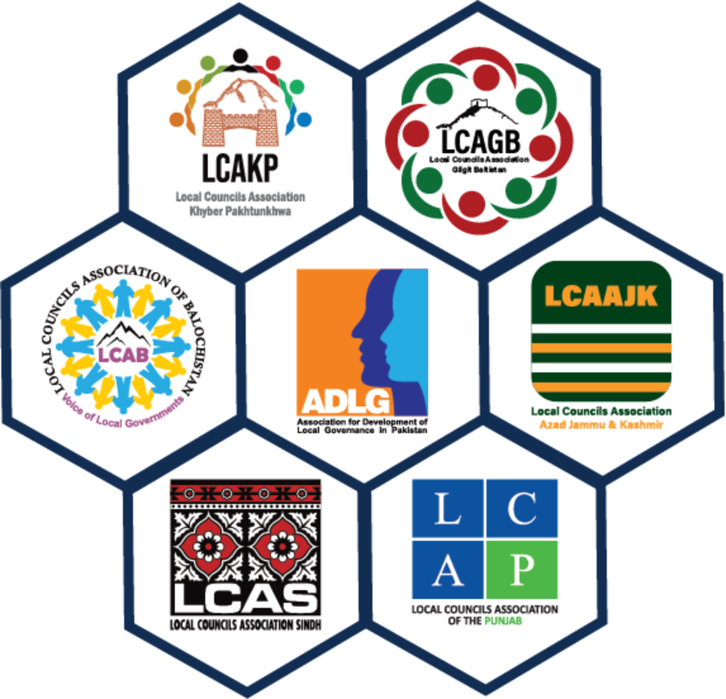
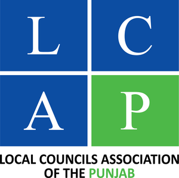
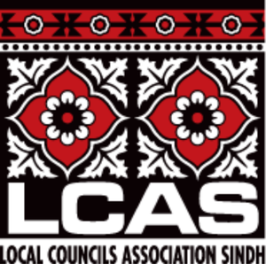
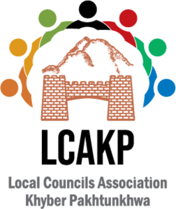
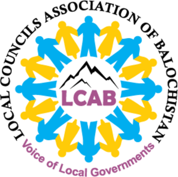
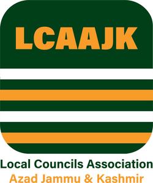
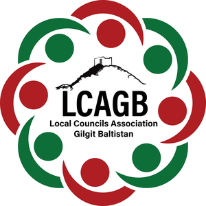

The Association for Development of Local Governance (ADLG) represents all provincial, Azad Jammu & Kashmir, and Gilgit-Baltistan Local Councils Associations. We bridge local communities and decision-makers to build inclusive, self-sustaining local democracy.

Governance & representation — General Body, Board of Governors, Executive Committee, and Presidency, setting the vision and policy agenda.
Execution & operations — led by the CEO and Program Manager, managing finance, M&E, advocacy, and donor-funded projects.

Representing council leadership across Punjab.

Advocating for local councils across Sindh.

Driving municipal empowerment in KP.

Strengthening representatives across Balochistan.

Supporting local governance in AJK.

Connecting mountain council districts in GB.
Representing capital municipal interests.
Safeguarding constitutional local government rights and defending against council suspensions.
Equipping councillors and mayors with skills in municipal budgeting, tax execution, and service delivery.
Mainstreaming UN Sustainable Development Goals into local council development agendas.
Empowering underrepresented leadership — women, youth, minorities, transgender, traders, PWDs.